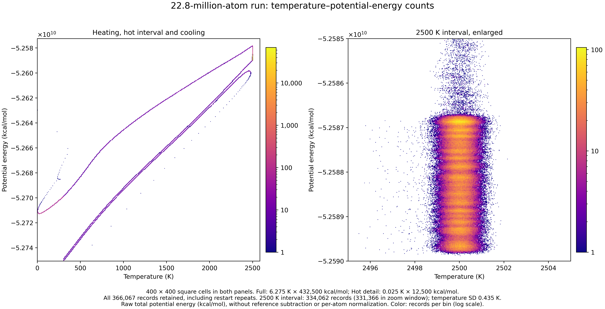
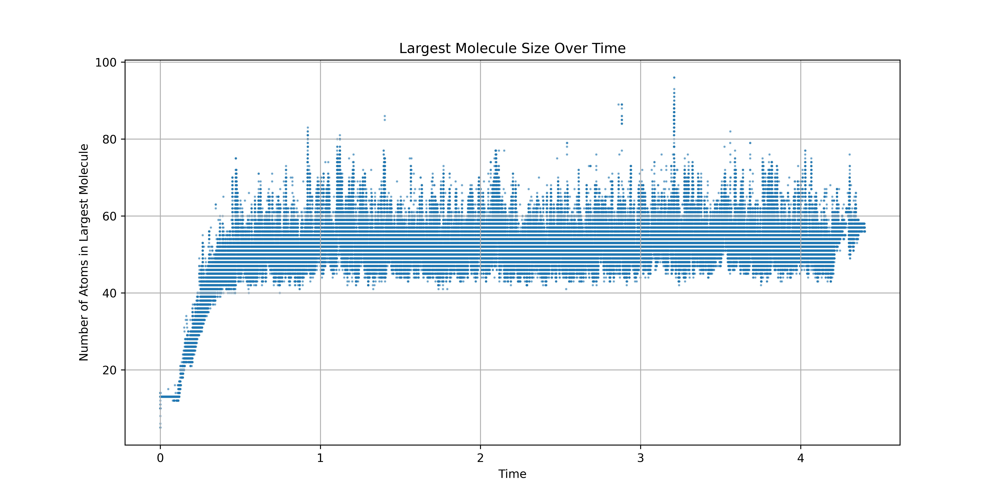
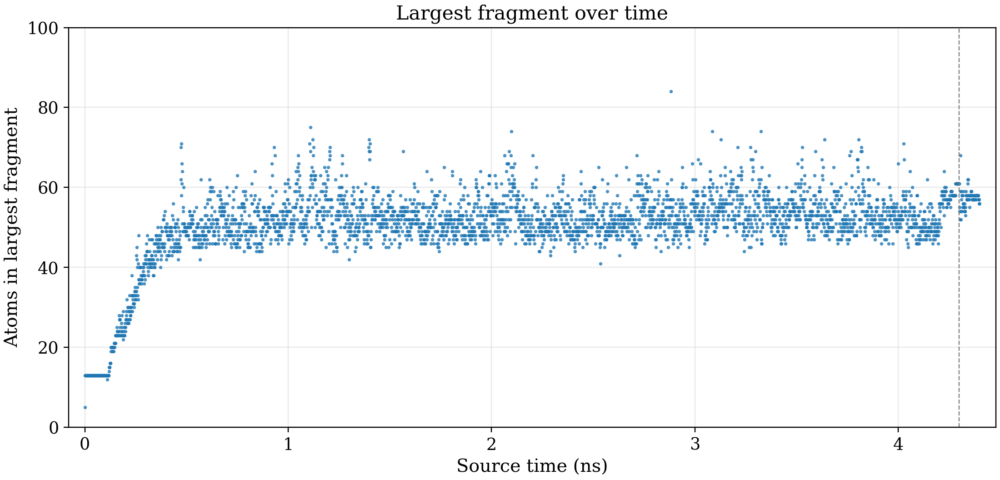
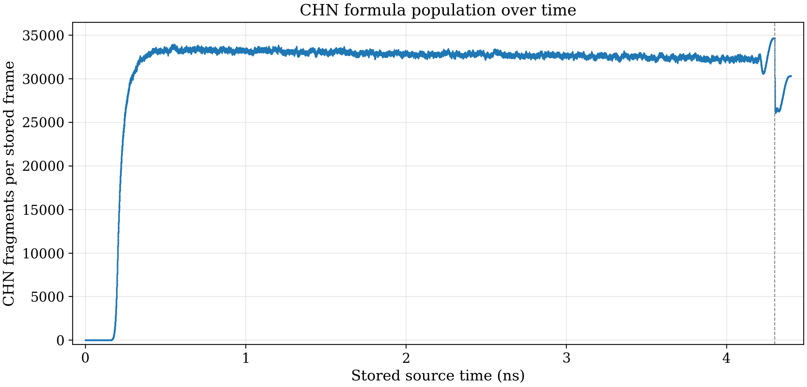
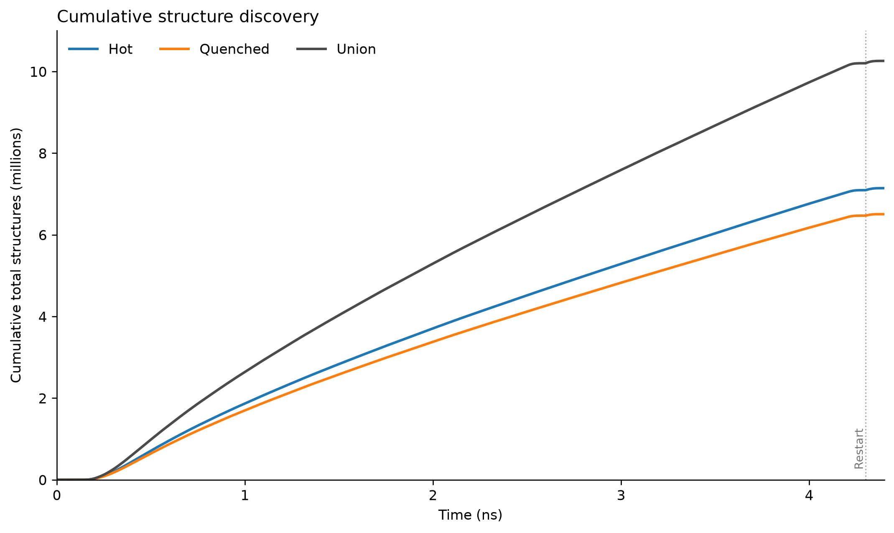

Early Earth · advisor review · updated 21 October 2026
Which figures carry the story?
For this meeting: identify useful figures and concrete revisions; name A or B for the three comparisons. Historical artwork leads, with alternatives below. Work toward about 20–30 agreed high-value figures across the library.
Comments saves public feedback with GitHub. Library links provide ratings and Priority/Discuss or Later/Hidden.
Browse the full figure library →1 · Energy history
Which presentation makes the energy history clearest?
A · Historical density image

Figure 16 — Potential-energy hysteresis during heating and cooling
This retains the historical visual emphasis used in manuscript A. Its displayed energy normalization remains unresolved; read the branch ordering within this image rather than treating its scale as a recovered conversion to raw energy.
Compare B · approved raw-log display
B uses raw total potential energy and an enlarged hot region. Its axes are bound to the source logs. It is a separate display, rather than a conversion of A’s unresolved normalization.

Review question: keep A, use B, or revise the presentation? Include the axis definition you want the caption to make clear.
2 · Saved formation windows
Do the movies explain the connectivity examples?
Pause, seek or enter full screen. Each movie combines a saved assembly window with a final rotating view; the final rotation is a display operation.
Alanine-reference example
Figure 4a — Alanine — saved formation window and final 360° view
Glycine-reference example
Figure 4b — Glycine — saved formation window and final 360° view
These are selected saved-coordinate examples, not a census of formation events. A named-reference connectivity match does not establish bond order, charge, stereochemistry, stability or a complete reaction mechanism. Original GIF/PNG downloads remain on the library cards.
Geometry companions for conformation discussion: Figure 2a — Alanine atom quartet for the orientation analysis · Figure 2b — Alanine central-carbon orientation histogram. Their coordinate and periodic-boundary qualifications remain in force.
Review question: which example should lead, and which frames or labels need explanation?
3 · Largest fragments
Which view best explains the upper size envelope?
A · Historical dense trace
This preserves the visible historical excursions. Its exact plotting cell and filters remain unresolved; quantitative statements need the separately audited tables.

Figure 43 — Largest fragment over time — blue trace
Compare B · complete sparse-cohort hot maxima
B shows every one of the 3,521 sampled original-coordinate hot maxima at 1.25 ps spacing, with the restart marked. The plotted maximum is 84 atoms.

A and B use different sampled products. The historical full-rate formula inventory reaches 96 atoms; this does not make its maximum equivalent to the sparse-cohort maximum. Choose both the scientific population and its presentation.
Review question: retain A’s dense historical view, use B’s explicit sparse cohort, or show their distinction as a supporting comparison?
4 · Composition through time
How should the CHN population be presented?
A · Historical CHN artwork
This is the familiar historical image. Its counts agree with the recovered table at raster resolution; the historical producer and merge lineage remain qualified.

Figure 64 — CHN formula counts over time
Compare B · retained-table recreation
B shows all 352,000 stored frame counts, including zeros, without smoothing or connecting lines. Its labels identify fragments and stored time; the restart is marked.

CHN is an elemental-composition group. It does not identify a named molecule, yield or formation rate.
Review question: which presentation makes the composition claim easiest to understand, and what must the caption say?
5 · Adrian’s counting question
How many distinct structures did we observe?
The current answer counts each distinct emitted SMILES once, over the sampled frames, and removes the five starting species. The union deduplicates entries across the hot and quenched sets.

Figure 99 — Discovery counts excluding starting species
| Population | Distinct emitted SMILES |
|---|---|
| Hot | 7,142,541 |
| Quenched | 6,505,463 |
| Hot or quenched union | 10,259,642 |
This October 20 standalone view retains all 3,521 sampled times (every 100th saved frame). Quenched endpoints are independent branches aligned to the corresponding hot-frame time, not successive frames of one quenched trajectory. The dotted line marks the inherited restart boundary.
These are sampled first detections of emitted strings, not a count of confirmed unique chemical molecules or formation events. Exact-connectivity graph counts use a different identity and should be reported separately. This figure does not extrapolate a total for unsampled frames or a molecular formation rate.
Download PDF · Download plotted counts
Review question: is this the clearest answer to the counting question, and which identity/counting definition belongs in the main text?
6 · Variety versus abundance
Does a rich catalog mean abundant large fragments?
Keep this distinction next to the discovery curve: a distinct string counts once, while an occurrence counts every sampled appearance, including multiplicity. The displayed distributions are normalized separately.

Figure 71 — Large string variety, small-fragment abundance
The median size is 23 atoms by union-string variety and 3 atoms by either occurrence distribution. Sizes include hydrogen. This existing figure uses the full union; it has not had the five initial species removed as in the discovery-count answer above.
Occurrences are repeated sampled observations, not yields or independent molecule histories.
Review question: should this be a lead explanatory panel or a supporting companion to discovery?
7 · Quench response
What changes after the controlled quench?
The paired display compares mean and largest fragment sizes before and after quench. Its horizontal axis is the archived source frame, and its sizes count all atoms, including hydrogen.

Figure 59 — Quench changes mean and largest fragment sizes
This compares aligned hot snapshots with independently quenched endpoints. Connectivity changes under the operation do not by themselves establish stable molecules, reactions or kinetic pathways.
Review question: keep this full comparison, emphasize one statistic, or use a selected connectivity example alongside it?
Explore structures after the first review
Use these galleries for a specific fragment or connectivity question, rather than extending the main reading path.
The frame-447 pages use population/size display thresholds; the representative gallery has its own selection. These views are not complete molecular censuses.
What would help us converge?
- Name the figures worth keeping and the one point each should explain.
- For Energy, Largest fragments and CHN, specify A, B or a concrete revision.
- Use Priority/Discuss for the useful set and Later/Hidden for material that can wait.
The requested SMILES-to-IUPAC supplementary table is still unstarted. It needs a defined identity and naming scope; it is not represented here as a completed result.